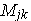

Система уравнений, записанных по 2ЗК (алгебраическая сумма ЭДС в контуре равна алгебраической сумме напряжений на отдельных участках этого контура) для контурных токов и контурных ЭДС цепи без зависимых источников энергии и взаимно связанных ветвей, может быть представлена в виде произведения квадратной матрицы [ R ] контурных и общих сопротивлений контуров на столбцовую матрицу контурных токов [ IK ] и матрицы контурных ЭДС [ EK ]:
|
|
- квадратная матрица сопротивлений размерности n x n ;
- столбцовые матрицы (векторы) соответственно контурных ЭДС и контурных токов размерности n x 1. |
- квадратная матрица сопротивлений размерности n x n ;
- столбцовые матрицы (векторы) соответственно контурных ЭДС и контурных токов размерности n x 1.
Решив матричное уравнение [ R ][ IK ] = [ EK ] относительно матрицы [ IK ], получим
где - обратная матрица по отношению к матрице сопротивлений [ R ];
- транспонированная матрица алгебраических дополнений определителя матрицы сопротивлений [ R ];
где  ( j - строка, k - столбец) – миноры матрицы сопротивлений; (-1) j + k - знаковый коэффициент.
Внимание!
1. Перед составлением матричного уравнения контурных токов целесообразно источники тока преобразовать в источники напряжения.
2. В случае, если цепь содержит источники напряжения и источники тока, элементы матрицы [EК] записывают в виде: EК = Ek + RkJk, где Ek - алгебраическая сумма ЭДС источников напряжения, включенных в ветви рассматриваемого контура. Слагаемые записывают со знаком плюс (минус), если направление обхода контура и направления ЭДС совпадают (не совпадают); RkJk - алгебраическая сумма произведений токов ИТ, подключенных параллельно ветвям, на соответствующие сопротивления ветвей. Слагаемое записывается со знаком плюс (минус), если направление тока Jk и направление контурного тока совпадают (не совпадают).
|